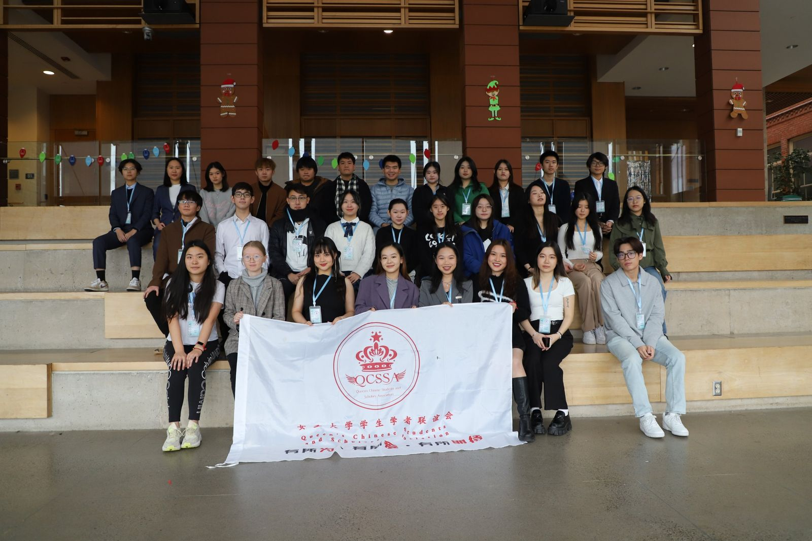

Timeline经历
2027
-
Expected spring 2027预计 2027 年春季毕业
BA (Honours), Psychology心理学荣誉文学学士
Queen’s University, Kingston. Minor in Film and Media.皇后大学（金斯顿），辅修电影与媒体
- Selected coursework: Digital Media Theory; Culture and Technology (in progress); World Cinemas; Social Psychology; Judgment and Decision Making.修过数字媒体理论、世界电影、社会心理学、判断与决策，文化与技术正在修读。
- Academic interests: media and communication, marketing communication, audience engagement, education and intercultural learning.感兴趣的方向：媒体与传播、营销传播、受众参与、教育和跨文化学习。
Education学业
2026
-
Jan–Apr 20262026 年 1 月至 4 月
Two correlational studies in R两项用 R 分析的相关研究
PSYC 203: Research Methods in Psychology, Queen’s University皇后大学 PSYC 203：心理学研究方法
- Neuroticism and stress (N = 187): a large positive correlation, r(185) = .53, p < .001.神经质与压力（N = 187）：较强的正相关，r(185) = .53，p < .001。
- Media multitasking, mindfulness and flanker-task distraction (N = 86): one hypothesis supported, one not, with the reasons analyzed.媒体多任务、正念与 flanker 任务干扰（N = 86）：一个假设得到支持，一个没有，并分析了原因。
- Analyzed both datasets in R and RStudio (tidyverse, dplyr) and wrote full APA-style reports.用 R 和 RStudio（tidyverse、dplyr）分析两份数据，并写成完整的 APA 格式报告。
Research研究 -
Feb 20262026 年 2 月
First Prize, Beginners’ Category初级组一等奖
37th Japanese Speech Contest in Ottawa, held at the Embassy of Japan第 37 届渥太华日语演讲比赛，在日本大使馆举行
- Prepared and delivered a Japanese speech with guidance from Keiko Aoki at Queen’s University.在皇后大学 Keiko Aoki 老师的指导下准备并完成了这场日语演讲。
Awards and training获奖与培训
2025
-
May–Jul 20252025 年 5 月至 7 月
Research Intern研究实习生
Institute of Psychology, Chinese Academy of Sciences中国科学院心理研究所
- Compared interview design and data-analysis approaches across three qualitative studies and summarized the findings in a report on family mental health.对比三项质性研究的访谈设计和数据分析方法，把结论整理成一份家庭心理健康报告。
- Organized literature and survey data for adolescent psychology research, and shared observations on adolescent stress and coping in team discussions.为青少年心理研究整理文献和问卷数据，在组会上分享自己对青少年压力与应对方式的观察。
Research研究 -
Apr 2025 – May 20262025 年 4 月至 2026 年 5 月
Director of Marketing市场部部长
Queen’s Chinese Students and Scholars Association (QCSSA)皇后大学中国学生学者联合会（QCSSA）
- Led a marketing team of 10+: assigned projects, reviewed deliverables and coordinated content schedules.带领 10 多人的市场部，分派任务、审稿，安排各项宣传的发布时间。
- Worked with the events and external relations teams on content and promotional materials for 6 major events.和活动部、外联部一起，为 6 场大型活动准备宣传内容和物料。
- Wrote social media content during a period when total followers grew 20%; our best post drew more than 300 interactions.我负责内容的这段时间，账号总粉丝增长了 20%，互动最多的一条推文超过 300 次。
Leadership and marketing学生工作与市场
2024
-
Dec 2024 – Apr 20252024 年 12 月至 2025 年 4 月
Associate Director of Marketing市场部副部长
Queen’s Chinese Students and Scholars Association (QCSSA)皇后大学中国学生学者联合会（QCSSA）
- Coordinated schedules, equipment and on-site logistics for events of about 200 people, and hosted them in Chinese and English.统筹约 200 人活动的排期、设备和现场执行，并用中英文主持、带动现场。
Leadership and marketing学生工作与市场 -
Sep 2024 – present2024 年 9 月至今
Campus Ambassador校园大使
UIBE Summer School对外经济贸易大学暑期学校（UIBE）
- Plan and support one or two major events and one or two campus booths each semester, presenting the program on stage and talking with students directly.每学期策划并参与一到两场大型活动、一到两次校园摆摊，既上台宣讲，也和同学面对面交流。
- Explain program and application information to prospective students and answer their questions; one student I referred completed paid enrolment.给有意向的同学讲解项目和申请流程、回答问题；我推荐的一位同学已经付费报名。
- Write comparative reports on summer-school programs to inform positioning, recruitment messaging and outreach plans.撰写暑期项目对比报告，供项目定位、招生文案和推广计划参考。
Leadership and marketing学生工作与市场 -
Jan–Mar 20242024 年 1 月至 3 月
Immediate Recall Study即时回忆实验
Cognitive Psychology course project, Queen’s University皇后大学认知心理学课程项目
- Designed study procedures with a five-person team and collected 5 rounds of standardized immediate-recall data from 50 participants: 250 word-list trials plus a story recalled after 24 hours.五人小组一起设计实验流程，从 50 名参与者那里收集了 5 轮标准化的即时回忆数据：250 次词表回忆，外加一段 24 小时后回忆的故事。
- Built a structured record sheet, analyzed the results in Excel and made the charts for our final visual report.设计结构化记录表，用 Excel 整理分析结果，并为最终报告制作图表。
Research研究
2023
-
Oct 2023 – Jan 20242023 年 10 月至 2024 年 1 月
Operations Intern运营实习生
UPATH Summer SchoolUPATH 暑期学校
- Shared academic program information through WeChat Moments, campus outreach and event announcements to support student recruitment.通过朋友圈、校园宣传和活动通知介绍学术项目，协助招生。
- Helped with candidate screening, interview scheduling, interview preparation and evaluation feedback for internal recruitment.协助内部招聘：筛选候选人、安排面试、准备面试材料、汇总评估反馈。
Leadership and marketing学生工作与市场
-
Sep 2023 – Dec 20242023 年 9 月至 2024 年 12 月
Marketing Officer市场部干事
Queen’s Chinese Students and Scholars Association (QCSSA)皇后大学中国学生学者联合会（QCSSA）
- Made promotional visuals in Canva and laid out WeChat articles in Xiumi, adjusting topics to each platform and to what students cared about.用 Canva 做宣传图，用秀米排版公众号文章，根据平台特点和同学们关心的话题调整内容。
Leadership and marketing学生工作与市场See the design work看设计作品
2022
-
Nov 2022 – Aug 20232022 年 11 月至 2023 年 8 月
Introductory Counselling Course心理咨询入门课程
Seed Plan, KnowYourself and TangXinliSeed Plan（KnowYourself 与 TangXinli）
- Completed 78 hours of self-directed online study in counselling theory and case conceptualization, and passed the first written examination.自学 78 小时线上课程，内容是咨询理论和个案概念化，通过了第一阶段笔试。
- Wrote case conceptualizations for six practice cases to prepare for the phone interview, a simulated first counselling session.为电话面试（模拟第一次咨询）做准备，给六个练习案例写了个案概念化。
Awards and training获奖与培训
Skills and languages技能与语言
Used in the work above上面这些经历里用到的
Statistical and programming tools统计与编程工具
- R (tidyverse, dplyr)R（tidyverse、dplyr）
- RStudio
- SPSS
- SAS
- SQL
- Python (foundational)Python（基础）
Research and analysis研究与分析
- Correlation and t-tests in R, reported in APA style用 R 做相关与 t 检验，按 APA 格式报告
- Literature review文献综述
- Qualitative-study comparison质性研究比较
- Survey-data organization问卷数据整理
- Excel analysis and chartsExcel 分析和作图
Communication and design传播与设计
- Canva
- Xiumi秀米
- PowerPoint
- Content planning内容策划
- Public speaking公开演讲
- Event hosting in Chinese and English中英双语主持
- Student outreach学生招募与咨询
Languages语言
- Chinese, native中文：母语
- English, professional proficiency英语：工作语言水平
- Japanese, intermediate, with formal coursework and a speech contest prize日语：中级，上过正式课程，拿过演讲比赛奖项
Two correlational studies, analyzed in R两项相关研究，用 R 完成分析
- Course课程
- PSYC 203: Research Methods in PsychologyPSYC 203：心理学研究方法
- Term学期
- Winter 20262026 年冬季
- Software软件
- R and RStudio (tidyverse, dplyr)R 与 RStudio（tidyverse、dplyr）
- Samples样本
- N = 187 and N = 86N = 187、N = 86
- Analyses分析
- Pearson correlation, t-testsPearson 相关、t 检验
This course is where I learned to run a study end to end: write a testable hypothesis, analyze the class dataset in R, and report the results in APA style. I wrote two full reports.
这门课让我完整走了一遍研究流程：提出可检验的假设，用 R 分析课程数据，再按 APA 格式写出结果。我完成了两篇完整的研究报告。
- Study 1: neuroticism and stress研究一：神经质与压力r(185) = .53, p < .001
- Study 2: media multitasking and MAAS score*研究二：媒体多任务与 MAAS 分数*r(84) = .29, p = .006
- Study 2: MAAS score and flanker distraction研究二：MAAS 分数与 flanker 干扰r(84) = −.09, p = .398
- Study 2: media multitasking and flanker distraction研究二：媒体多任务与 flanker 干扰r(84) = −.01, n.s.
Study 1: neuroticism and stress研究一：神经质与压力
Hypothesis: students higher in neuroticism report more stress. Neuroticism came from the Big Five Inventory and stress from the DASS-21 stress subscale. Across 187 undergraduates the correlation was large and positive, r(185) = .53, p < .001, in line with diary and appraisal studies of how neurotic people perceive everyday stressors.
假设：神经质越高的学生，报告的压力越大。神经质用大五人格量表（BFI）测量，压力用 DASS-21 的压力分量表。在 187 名本科生中，两者呈较强的正相关，r(185) = .53，p < .001，和以往日记研究、认知评价研究的结论一致。
Study 2: media multitasking, mindfulness and distraction研究二：媒体多任务、正念与注意干扰
Three measures and two hypotheses: a media-multitasking questionnaire, the Mindful Attention Awareness Scale (MAAS), and an Eriksen flanker task, which measures how much irrelevant information slows a response. Heavier media multitaskers reported lower mindfulness, r(84) = .29, p = .006. Mindfulness did not predict flanker distraction, r(84) = −.09, p = .398.
三个测量、两个假设：媒体多任务问卷、正念注意觉知量表（MAAS），以及 Eriksen flanker 任务（测量无关信息会让反应慢多少）。媒体多任务越频繁，正念水平越低，r(84) = .29，p = .006；正念与 flanker 干扰没有显著关系，r(84) = −.09，p = .398。
The report explains the null result instead of hiding it: self-report and behavioural measures often capture different parts of attention (Dang et al., 2020), the sample was modest, and the distraction scores varied widely. In this dataset a higher MAAS score meant lower mindfulness, so every result had to keep the score and the construct apart to get the direction right.
报告没有回避不显著的结果，而是分析原因：自评量表和行为任务测到的往往是注意的不同侧面（Dang et al., 2020），样本量有限，干扰分数的波动也很大。本数据集的 MAAS 分数是反向计分的，分数越高代表正念越低，所以每个结论都要把“分数”和“构念”分开，方向才不会写反。
R, week by week每周实验课里的 R
- Imported and checked data with read.csv(), str() and is.na() for missing values.用 read.csv() 导入数据，用 str() 检查变量类型，用 is.na() 找缺失值。
- Reverse-coded items with recode() from the tidyverse and built scale totals.用 tidyverse 的 recode() 反向计分，再合成量表总分。
- Summarized groups (means, SDs) with dplyr.用 dplyr 按组计算均值和标准差。
- Ran one-sample, paired and independent t-tests with t.test() and Pearson correlations with cor.test().用 t.test() 做单样本、配对和独立样本 t 检验，用 cor.test() 做 Pearson 相关。
- Reported every result in APA format and cited R and its packages.按 APA 格式报告结果，并规范引用 R 及所用的包。
37th Japanese Speech Contest in Ottawa第 37 届渥太华日语演讲比赛
- Result结果
- First Prize, Beginners’ Category初级组一等奖
- Venue地点
- Embassy of Japan, Ottawa渥太华，日本大使馆
- Date时间
- 28 February 20262026 年 2 月 28 日
- Guidance指导老师
- Keiko Aoki, Queen’s UniversityKeiko Aoki（皇后大学）
I entered as a beginner and gave a prepared speech in Japanese, written and rehearsed with guidance from Keiko Aoki at Queen’s University.
我以初学者身份参赛，在皇后大学 Keiko Aoki 老师的指导下写稿、排练，完成了一场日语演讲。


Research internship at the Chinese Academy of Sciences中国科学院心理研究所研究实习
- Role职务
- Research Intern研究实习生
- Where机构
- Institute of Psychology, Chinese Academy of Sciences中国科学院心理研究所
- Dates时间
- 7 May – 7 July 20252025 年 5 月 7 日至 7 月 7 日
- Supervisor导师
- Prof. Zhanbiao Shi史占彪教授
- Focus方向
- Adolescent psychology, family mental health青少年心理、家庭心理健康
I compared how three qualitative studies designed their interviews and analyzed their data, then wrote a report pulling together what they found about family mental health.
我对比了三项质性研究在访谈设计和数据分析上的做法，再把它们关于家庭心理健康的发现写成一份报告。
I also organized literature and survey data for adolescent psychology research and brought my observations on adolescent stress and coping to team discussions.
我还为青少年心理研究整理文献和问卷数据，并在组会上分享对青少年压力与应对方式的观察。
From my supervisor’s recommendation letter导师推荐信摘录
“When we talked about the psychological pressure of adolescents, she combined the knowledge she had learned and the cases she had come into contact with to analyze the possible causes and put forward some constructive suggestions.”“我们讨论青少年心理压力时，她结合所学知识和接触过的案例分析可能的原因，并提出了一些建设性的建议。”
“She is very empathetic, which is particularly important in the field of adolescent psychology.”“她很有同理心，这在青少年心理领域尤其重要。”
“I strongly recommend her to your graduate program without any reservation.”“我毫无保留地向贵项目推荐她。”

What I wrote at the end of the internship (WeChat article, in Chinese)实习结束时我写的感言（公众号文章）
QCSSA events: from poster to roomQCSSA 活动：从海报到现场
- Role职务
- Marketing officer, associate director, director市场部干事、副部长、部长
- Years时间
- Sep 2023 – May 20262023 年 9 月至 2026 年 5 月
- Scale规模
- About 200 people per event每场约 200 人
- Team团队
- 10+ people10 多人
- Hosting主持
- Chinese and English中文、英文
Posters and articles were half the job. The other half happened on the day: schedules, equipment, on-site logistics, and a microphone in two languages.
做海报和推送只是一半工作，另一半在活动当天：排期、设备、现场执行，还有中英双语主持。
- Coordinated schedules, equipment and on-site logistics with the events team.和活动部一起安排排期、设备和现场执行。
- Hosted on stage in Chinese and English and kept the audience involved during live segments.用中英文在台上主持，在互动环节调动观众。
- As director, assigned projects to a team of 10+, reviewed their work and kept our posting schedule in step with the events and external relations teams.当部长时给 10 多人的团队分派任务、审稿，和活动部、外联部对齐发布时间。
- Followers grew 20% while I worked on content; our best post passed 300 interactions.我做内容期间，账号粉丝增长 20%，互动最多的一条超过 300 次。
The poster, then the night先是海报，然后是现场


UIBE Summer School outreachUIBE 暑期学校推广
- Role职务
- Campus Ambassador校园大使
- Each semester每学期
- 1–2 events and 1–2 booths1 到 2 场活动，1 到 2 次摆摊
- Result成果
- One referred student enrolled推荐一人完成报名
The job is part event promotion and part advising: I explain programs and the application process to prospective students and answer their questions.
这份工作一部分是活动推广，一部分是咨询：给有意向的同学讲解项目和申请流程，回答他们的问题。
I also write comparative reports on summer-school programs to inform positioning, recruitment messaging and outreach plans.
我也写暑期项目对比报告，给项目定位、招生文案和推广计划做参考。

Immediate Recall Study即时回忆实验
- Course课程
- Cognitive Psychology, Queen’s University皇后大学认知心理学
- Team团队
- 5 people5 人
- Participants参与者
- 5050 名
- Word-list trials词表回忆
- 250 (5 per person)250 次（每人 5 轮）
- Tools工具
- ExcelExcel
We ran a memory experiment with 50 participants. Each person heard a short story and a list of 15 words, recalled the list five times in a row, and wrote down the story 24 hours later. Everyone got the same instructions and the same response sheets, so the 250 word-list trials could be compared directly.
我们做了一个有 50 名参与者的记忆实验。每个人先听一段短故事和一组 15 个词，接着连续回忆词表五轮，24 小时后再写下记得的故事内容。所有人拿到的是同样的指导语和记录表，所以 250 次词表回忆可以直接比较。
Listen听
A short story and a list of 15 words.一段短故事，和一组 15 个词。
Recall the list回忆词表
Write every word you remember, in any order.写下记得的所有词，顺序不限。
Cover and repeat盖住，再来
Hide the attempt and try again, five times in a row.盖住刚写的，再写一轮，连续五轮。
Wait 24 hours等 24 小时
No study in between.中间不复习。
Recall the story回忆故事
Write down everything you remember.写下记得的所有内容。
Two kinds of memory in one study一个实验，两种记忆
The word list measures learning through repetition. If recall climbs from trial 1 to trial 5, that climb is the learning curve. The structure matches the Rey Auditory Verbal Learning Test, a standard clinical memory test: 15 words, five learning trials, recall in any order. Covering each attempt before the next keeps every trial a test of memory, not of copying the line above.
词表测的是重复带来的学习：回忆数量从第 1 轮升到第 5 轮，这条上升的曲线就是学习曲线。它的结构和临床常用的 Rey 听觉词语学习测验（RAVLT）一致：15 个词、五轮学习、不限顺序回忆。每轮写完就盖住再写下一轮，保证测到的是记忆，而不是照抄上一行。
The story measures something else: what survives a day when the material has meaning. People usually keep the gist of a story and lose its exact wording, so a 24-hour recall shows how a delay reshapes meaningful memory rather than a list of separate items.
故事测的是另一件事：有意义的材料过了一天还剩下什么。人通常记得故事的大意，忘掉原话，所以 24 小时后的回忆反映的是时间怎样改变有意义的记忆，而不是一串孤立的词。
My part我负责的部分
- Designed the procedure with my team so that all 50 participants did exactly the same task in the same order.和组员一起设计实验流程，让 50 名参与者按同样的顺序完成同样的任务。
- Collected five rounds of standardized recall data from every participant.从每位参与者那里收集五轮标准化的回忆数据。
- Built a structured record sheet so every participant’s five trials were entered the same way.设计结构化记录表，让每个人的五轮结果都按同一格式录入。
- Analyzed the results in Excel and made the charts for our final visual report.用 Excel 分析结果，并为最终的可视化报告制作图表。
Counselling basics: six case conceptualizations心理咨询入门：六个案例的个案概念化
- Programme项目
- Seed Plan, cohort 13萌芽计划第十三期
- Run by主办
- KnowYourself × TangXinliKnowYourself × 糖心理
- Study学习
- 78 hours online: counselling theory and case conceptualization78 小时线上课程：咨询理论、个案概念化
- Assessment考核
- Written exam (passed), then a phone interview笔试（已通过），之后是电话面试
- Teachers授课老师
- Zhang Haiyin, Yan Zhengwei张海音、严正伟
Seed Plan is the entry course of KnowYourself’s training programme for counsellors who give chat-based support on its Yueshi app. It is open to beginners: you take the course first, then decide whether to apply.
萌芽计划是 KnowYourself（KY）聊愈师培养计划的入门课程。聊愈师在 KY 旗下的“月食”App 上提供即时聊天支持。课程零基础可报，先体验，再决定要不要报名成为聊愈师。
After the written exam came a phone interview: the interviewer plays the client from one of six cases, and you run a 10-minute first session. To prepare, I wrote a case conceptualization for each case.
笔试之后是电话面试：面试官从六个案例中抽一个扮演来访者，面试者完成 10 分钟的首次咨询。准备时，我给每个案例都写了个案概念化。
- Read each case through the lenses it called for: behavioural, psychoanalytic, existential or family systems.按案例需要，从行为主义、精神分析、存在主义或家庭治疗的角度分析。
- Put risk first where it mattered: one case needed a crisis assessment before anything else.该先评估风险的地方先评估：其中一个案例首先要做危机干预。
- Checked one case against the diagnostic criteria for specific phobia, noting which were met and which needed more information.对照特定恐怖症的诊断标准逐条核对，标出哪些满足、哪些还需要进一步了解。
- Outlined directions for the work, such as building a sense of security, saying needs out loud, and keeping healthy boundaries in a family.写下咨询方向，比如建立安全感、学会表达真实需求、在家庭关系里保持合理边界。